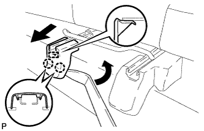
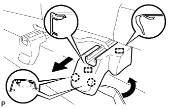
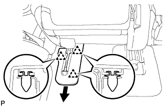
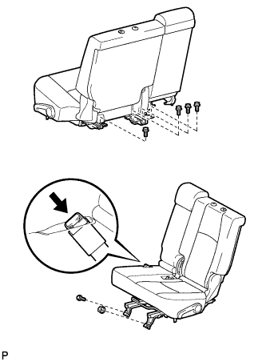

ЗАДНЕЕ СИДЕНЬЕ № 1 В СБОРЕ (для моделей с раздельным сиденьем типа 60/40 с функцией облегчения посадки "Walk In" с левой стороны) > СНЯТИЕ |
| 1. СНИМИТЕ ПОДГОЛОВНИК ЗАДНЕГО СИДЕНЬЯ В СБОРЕ |
Снимите подголовник.
| 2. СНИМИТЕ ЗАДНИЙ ЩИТОК КРОНШТЕЙНА ВНУТРЕННЕЙ НАПРАВЛЯЮЩЕЙ СИДЕНЬЯ |
|  |
С помощью съемника молдингов освободите 2 захвата и направляющую и снимите щиток.
| 3. СНИМИТЕ ЗАДНИЙ ЩИТОК КРОНШТЕЙНА НАРУЖНОЙ НАПРАВЛЯЮЩЕЙ СИДЕНЬЯ |
|  |
С помощью съемника молдингов расцепите 2 захвата.
Переместите щиток в направлении, указанном на рисунке стрелкой, чтобы освободить 2 направляющие, и затем снимите щиток.
| 4. СНИМИТЕ ЩИТОК КРОНШТЕЙНА ВНУТРЕННЕЙ НАПРАВЛЯЮЩЕЙ ЛЕВОГО СИДЕНЬЯ |
 |
С помощью съемника фиксаторов освободите 6 фиксаторов и снимите щиток.
| 5. СНИМИТЕ ЛЕВЫЙ ЩИТОК НАПРАВЛЯЮЩЕЙ СИДЕНЬЯ |
|  |
С помощью съемника фиксаторов освободите 3 фиксатора и снимите щиток.
| 6. СНИМИТЕ ЛЕВОЕ ЗАДНЕЕ СИДЕНЬЕ В СБОРЕ |
|  |
Отсоедините замок центрального ремня безопасности заднего сиденья от сиденья.
Выверните 5 болтов, отверните гайку и снимите сиденье.